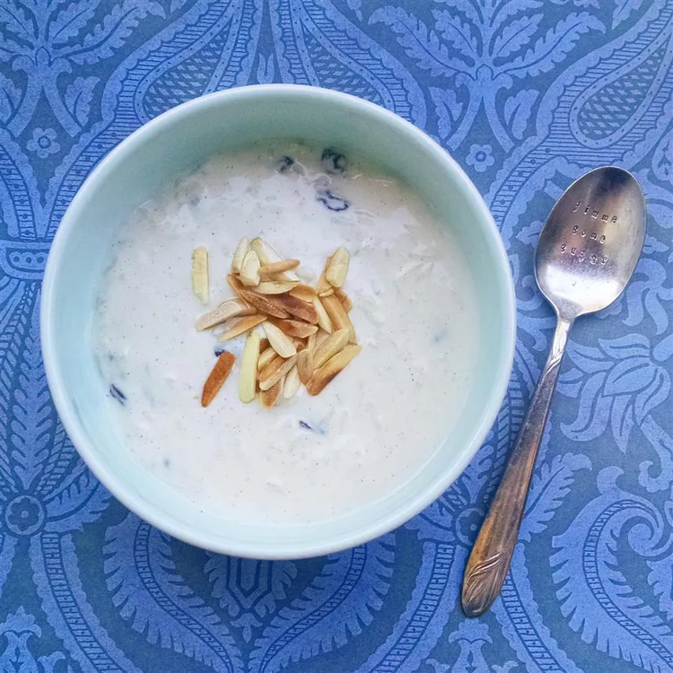

Home
Kheer

Description
Recipe for easy to make kheer(rice pudding kinda!).
Ingredients
- 0.5 cup basmati rice
- 2 tablespoons of sugar
- 5 roasted and chopped almonds
- 2 cup of full fat milk.
- 0.25 cup raisins
- 0.5 tablespoons of cardamom
Steps
- In saucepan, boil the milk with sugar.
- Add rice, cardamom, raisins to the mixture and cook them for 20 minutes till rice are tender.
- Garnish with almonds.